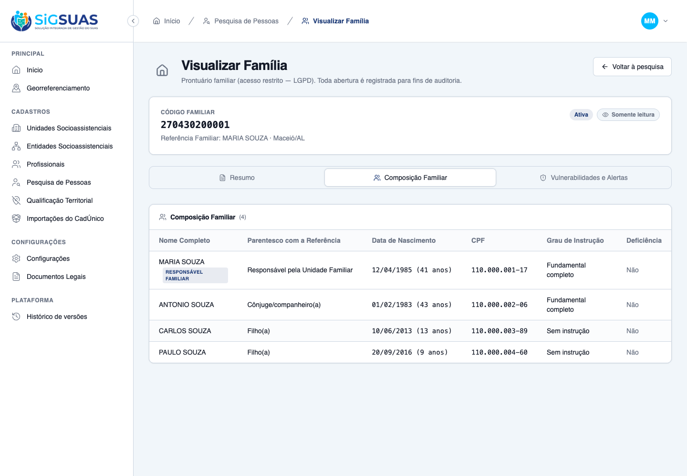
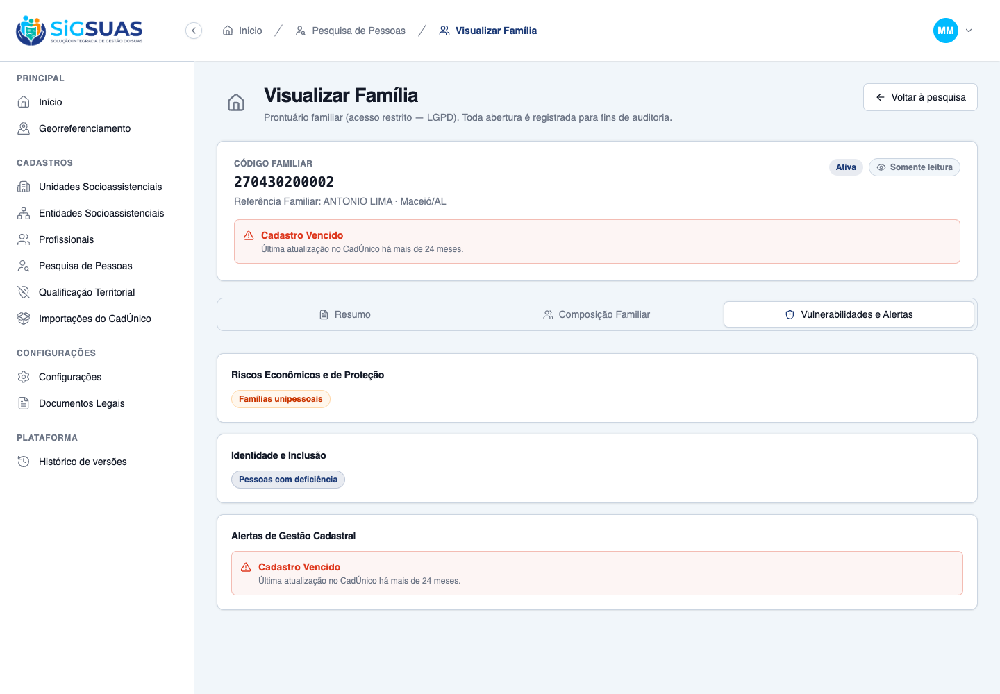
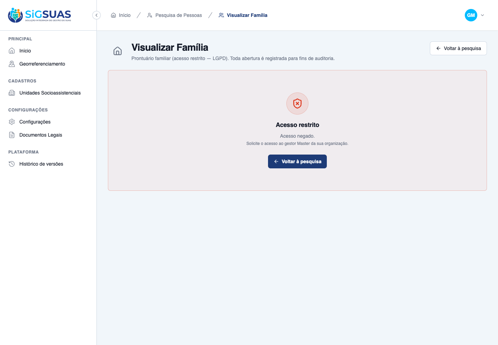

Ambiente: API Sail/PostgreSQL (localhost) · client Vite :5174 (não-mock)
Organização (tenant): Maceió Geo · IBGE 2704302
Perfis usados: Master (autorizado) e geo_panel_viewer (sem families.view-details)
Ferramenta: playwright-cli (Chromium) + Pest
Resumo
6 critérios evidenciados: CA01 (#9909), CA02 (#9910), CA05 e CA06 (#9911) por navegador, mais as regras de negócio transversais RN01 (acesso condicionado ao perfil) e RN06 (isolamento multi-tenant), também por navegador. Todos atendidos. A auditoria LGPD foi verificada diretamente na base (uma linha por abertura autorizada; zero linhas para o acesso negado). Apêndice: 45 testes Pest / 206 asserções cobrindo o serviço de vulnerabilidades, o payload do endpoint, o enum de zona de domicílio e a consistência com o Painel de Georreferenciamento.
CA
Critério
Status
CA01
Renderização de dados integrados de moradia (HU #9909)
ATENDIDO · navegador
CA02
Leitura de integrantes cadastrados (HU #9910)
ATENDIDO · navegador
CA05
Exibição do painel de riscos e tags (HU #9911)
ATENDIDO · navegador
CA06
Alerta cronológico de defasagem (HU #9911)
ATENDIDO · navegador
RN01
Acesso condicionado ao perfil do profissional
ATENDIDO · navegador
RN06
Isolamento de dados territorial (multi-tenant)
ATENDIDO · navegador
CA01 — Renderização de dados integrados de moradia (HU #9909) ATENDIDO · navegador
Critério (Gherkin): Dado que possuo o perfil autorizado e clico em visualizar os detalhes de uma família, Quando a aba "Resumo" é carregada, Então o sistema exibe os dados civis do responsável ao lado do endereço postal completo e traz a informação explícita se o domicílio fica em área Urbana ou Rural, de forma aberta e sem mascaramento.
Como foi testado: Login como Master do tenant Maceió Geo → abertura do prontuário da família 270430200003 (escolhida por ser rural, o caso menos óbvio) → aba Resumo.
Resultado observado:
Bloco "Dados da Referência Familiar" exibe nome, CPF, data de nascimento com idade calculada, NIS e telefones — todos abertos, sem máscara e sem clique de revelação (RN01).
Bloco "Endereço e Zona de Residência" traz localidade, tipo e nome do logradouro, número, complemento, CEP e município/UF.
A situação do domicílio aparece como destaque visual do bloco: "Situação do Domicílio: Rural" — informação explícita, conforme exige o critério.
Cabeçalho identifica "Referência Familiar: LUCIA PEREIRA · Maceió/AL" e o indicador "Somente leitura" (RN02).
Critério (Gherkin): Dado que estou na tela de detalhes da familia, Quando clico na aba "Composição Familiar", Então o sistema exibe a tabela de membros listando o nome de cada dependente da familia, o grau de parentesco com a referência, CPF, nascimento, grau de instrução se possui deficiência (Sim ou Não) em formato de leitura.
Como foi testado: Abertura do prontuário da família 270430200001 (4 integrantes ativos) → aba Composição Familiar.
Resultado observado:
Tabela com as seis colunas obrigatórias: Nome Completo, Parentesco com a Referência, Data de Nascimento, CPF, Grau de Instrução e Deficiência.
A Referência Familiar aparece na primeira linha, com o marcador "Responsável Familiar" (ordenação garantida pelo backend).
Idade calculada exibida junto ao nascimento (ex.: "12/04/1985 (41 anos)").
Deficiência renderizada como Sim/Não. Tabela travada para modificação: nenhum campo editável, nenhuma ação de inclusão ou exclusão (RN02).

ca02-composicao-familiar.png
CA05 — Exibição do painel de riscos e tags (HU #9911) ATENDIDO · navegador
Critério (Gherkin): Dado que acesso a aba "Vulnerabilidades e Alertas", Quando a tela renderiza os dados da família, Então o sistema apresenta em blocos de destaque apenas as vulnerabilidades que aquela família possui (Ex: exibe as tags [Extrema Pobreza] e [Trabalho Infantil], mas omite as demais caso não possuam marcação na base).
Como foi testado: Três famílias foram usadas para cobrir os três comportamentos do critério: 270430200003 (marcadores ativos e omissão dos demais), 270430200005 (grupo tradicional real) e uma família sem nenhum marcador (estado vazio).
Resultado observado:
Família 270430200003: exibe exatamente os 5 marcadores ativos — Extrema pobreza e Trabalho infantil (Riscos), Povos Indígenas (Identidade), Bolsa Família (Programas) e Cadastro A Vencer (Gestão Cadastral).
OMITE os marcadores sem registro na base: família unipessoal, situação de rua, pessoa com deficiência, comunidade quilombola e GPTE — não aparecem apagados nem em cinza, simplesmente não são renderizados.
Família 270430200005: exibe "GPTE — Família Cigana", provando que o nome do grupo tradicional real é apresentado.
Identidade e Inclusão usa tom neutro (azul institucional), distinto do laranja de alerta dos riscos — ser indígena ou quilombola não é um alerta.
Família sem marcadores: estado vazio explícito — "Nenhuma vulnerabilidade ativa registrada para esta família." — em vez de uma aba em branco, que seria ambígua.
Critério (Gherkin): Dado que a data da última atualização da família no arquivo importado aponta um intervalo de 24 meses de atraso, Quando abro a aba de vulnerabilidades, Então o sistema exibe de forma destacada o alerta de gestão: [Cadastro Vencido].
Como foi testado: Família 270430200002, com source_updated_at em 09/03/2024 — mais de 24 meses antes da data corrente.
Resultado observado:
Alerta "Cadastro Vencido" exibido em destaque, com a explicação "Última atualização no CadÚnico há mais de 24 meses."
O alerta aparece no CABEÇALHO da tela, fora das abas, além de constar no bloco "Alertas de Gestão Cadastral" — decisão de design registrada na spec (§2): é a informação acionável, e escondê-la atrás do terceiro clique contrariaria o propósito da HU.
Os limiares (vencido acima de 24 meses; a vencer entre 19 e 24) vêm das mesmas constantes usadas pelo Painel de Georreferenciamento — o CA01 evidencia o caso "A Vencer" na mesma tela.

ca06-cadastro-vencido.png
RN01 — Acesso condicionado ao perfil do profissional ATENDIDO · navegador
Critério (Gherkin): A tela de detalhes do prontuário familiar só poderá ser aberta se o operador possuir o perfil habilitado. Uma vez superada essa barreira, todos os dados carregam de forma aberta e legível, sem cliques adicionais de revelação.
Como foi testado: Segunda sessão de navegador, logada como geoviewer-2704302 — usuário com papel geo_panel_viewer, que NÃO carrega a permissão restrita families.view-details. Navegação direta para a URL do prontuário.
Resultado observado:
O backend responde 403 e a tela renderiza o estado "Acesso restrito — Acesso negado.", sem qualquer dado da família.
O gate é do backend, não da interface: a rota não tem guard local de permissão (por design — a permissão é restrita e o Master a acessa por bypass, então um guard local bloquearia o próprio Master).
Auditoria conferida na base: o usuário sem permissão gerou ZERO registros de abertura em activity_log (log_name=family_access). O acesso negado não deixa rastro de leitura — só o acesso autorizado deixa.

rn01-403-acesso-restrito.png
RN06 — Isolamento de dados territorial (multi-tenant) ATENDIDO · navegador
Critério (Gherkin): Um profissional logado e com perfil ativo só poderá abrir e visualizar as telas de prontuários detalhados das famílias que pertençam à base cadastral do seu próprio município (tenant).
Como foi testado: Ainda logado como Master do tenant Maceió Geo, navegação direta para o UUID de uma família pertencente a OUTRO tenant ("Tenant B Isolamento").
Resultado observado:
A tela responde "Família não encontrada" — o backend devolve 404, não 403.
O 404 (em vez de 403) é intencional: um 403 confirmaria a existência da família em outro município, vazando informação por canal lateral. O 404 nega até a existência do registro.
A verificação de posse do tenant é feita linha a linha no controller, porque o route-model-binding é resolvido antes de o escopo de tenant ser injetado.
✓ it returns the enriched record blocks: responsible, address with do… 0.06s
✓ it projects only the ACTIVE vulnerability codes, in canonical order… 0.05s
✓ it lists the full active composition: kinship, age, cpf and educati… 0.05s
✓ it keeps a stable shape for a sparse family: empty vulnerabilities,… 0.05s
Tests: 45 passed (206 assertions)
Duration: 4.82s